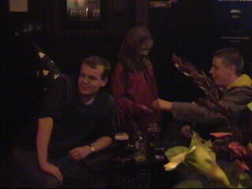

|
Charlton Athletic - Middlesbrough (1-0) |
Voor een paar euro vlieg je met Ryanair vanaf
Eindhoven naar Stansted-London.
Voor de wedstrijd naar de pub moed indrinken.
Dit noemt men hier "Dutch courage".
Er kwamen ook supporters van tegenstander
Middlesbrough naar de pub.
Op weg naar The Valley.
We hadden plaats op de lange zijde.

Charlton Athletic for ever!
De onlangs gereed gekomen overkapping van de
tribune met de fanatieke supporters.
Er waren meer dan 1000 Boro-supporters.
In de 5e min. deze vrije trap van Jensen.
Euel kopt de bal in de uiterste hoek, 1-0!
Enorme vreugde in The Valley.
Queudrue van Boro heeft een zware overtreding
begaan op Parker. De spelers van Charlton
claimen een rode kaart. De scheidsrechter geeft
hem echter niet.
Het slachtoffer.
Nederlandse speler bij Middlesborough, Boateng.
De microfoon van de Sky Sports reporter.
McLaren de trainer van Middlesbrough probeert
iets aan de achterstand te doen middels een
drievoudige wissel.

Het blijft 1-0. De eerste overwinning van
Charlton Athletic sinds 2 maart. Daarop drinken
we er dus nog een paar!
Goodbye Addicks, we'll meet again!
© Koempels
T>Koempels
Pleasure Dome